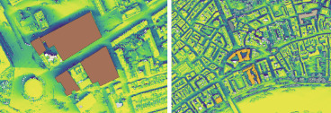

Spatial Patterns of Mobility and Sport Clubs
Spatial Patterns of Mobility and Sport Clubs
Are Sport Clubs Mediating Urban Expressive Crimes?—London as the Case Study
ISPRS International Journal of Geo-Information, 2025
Abstract: This study investigates the spatiotemporal relationship between major sporting events and expressive crimes in London, focusing on the Tottenham Hotspur Stadium area. Using Seasonal-trend decomposition (STL) and a Difference-in-Differences (DiD) framework, the research identifies that match days significantly drive expressive crimes in the vicinity. Furthermore, a Geographically Temporal Weighted Regression (GTWR) model (R²=0.83) reveals how underground passenger mobility and the presence of sports clubs mediate these crime patterns, suggesting that transit hubs and club locations serve as critical nodes for urban safety interventions..

Case study: plantable King's BuildingsMask R-CNN algorithm on detecting plantable urban roofs from aerial photography images in Central London, UK
Remote Sensing Applications: Society and Environment, 2025
Abstract: Urban greening is crucial for sustainable urban development and has gained significant attention from governments and the public for its support of biodiversity and energy reduction within buildings. Unlike traditional horizontal urban greening projects to expand greenspace, this study introduces an alternative, rooftop greening, and aims to use the vertical space of the city to increase urban greenspace and restore urban biodiversity. The study uses the Mask R-CNN instance segmentation deep learning algorithm, and superimposes it onto London’s aerial photography images, to develop a transferable model that can help identify potential rooftop greening spaces, while also obtaining the spatial location of buildings and the number of buildings that can cope with refined urban planning. The results show that the model has an high accuracy in extracting buildings from remote sensing images. The model is applied to buildings owned by King’s College London, located within the London borough of Southwark, as a case study, in assistance with multimodal data to derive environmental features on sunlight and wind speed, so to demonstrate the model’s robustness and generalization ability in London context. The application of the research could help refine urban planning and urban greening in other UK urban contexts.